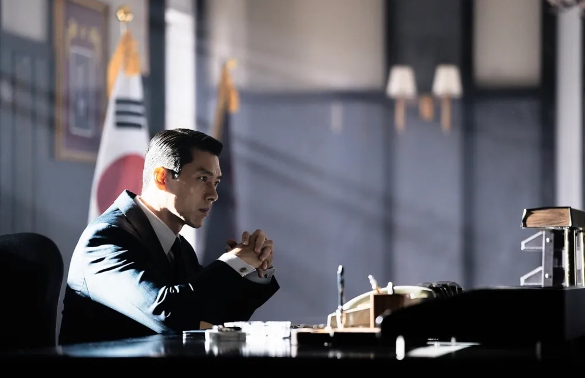
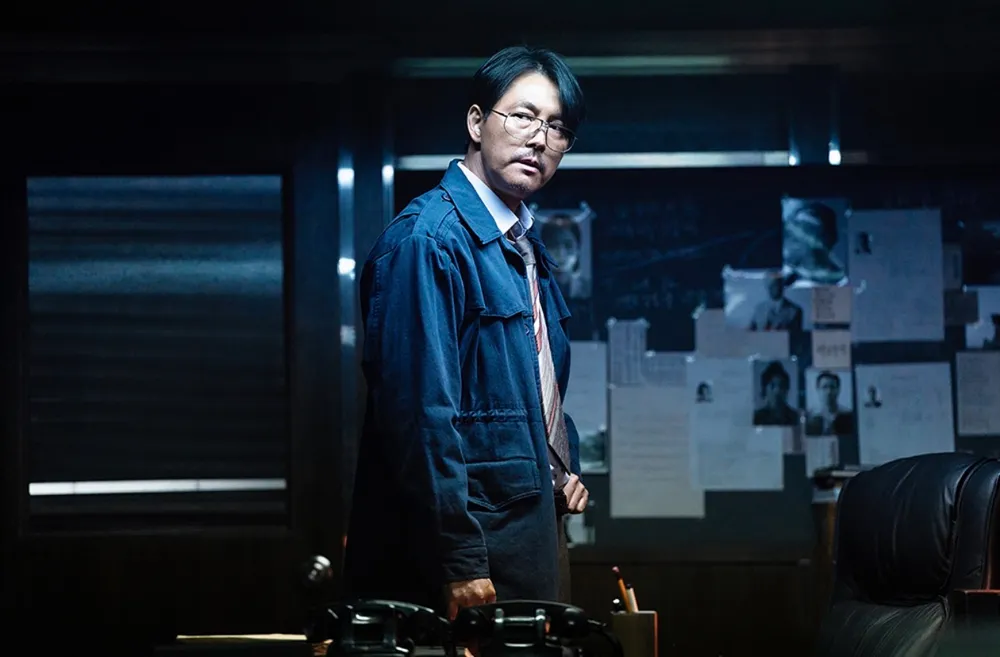
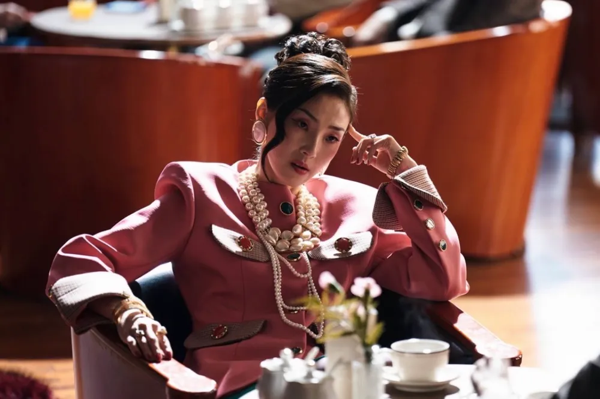
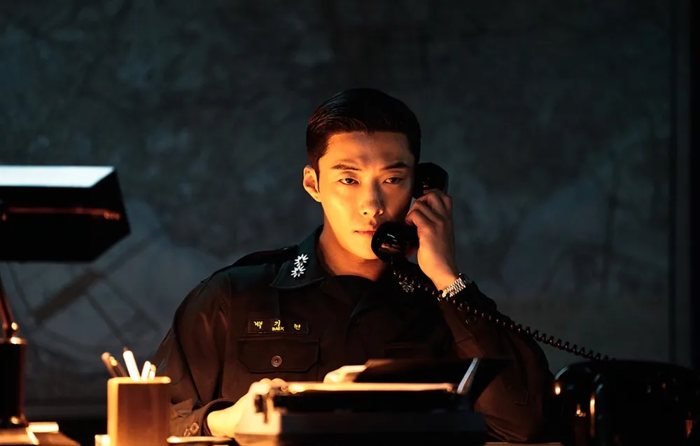
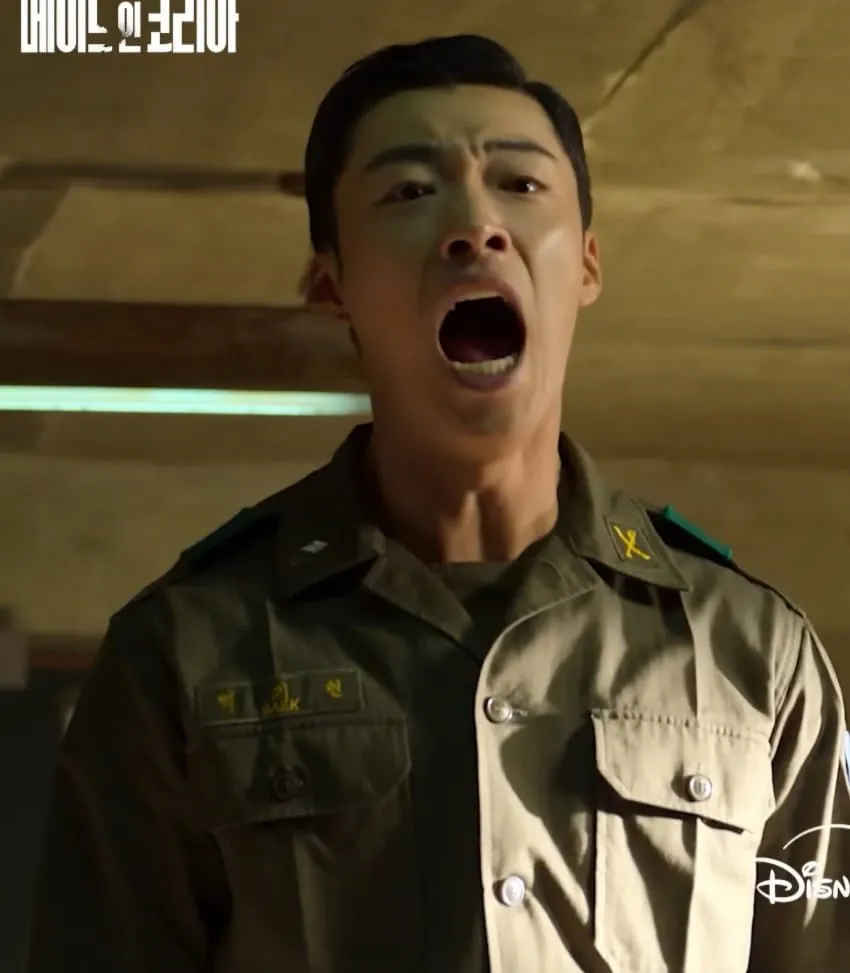

메이드인 코리아 시즌 2를 보면 중반부터 끝까지 머리속에 ????가 뜰 수밖에 없음
우리가 등장인물들의 행동을 자연스럽게 납득하고 작품에 몰입하려면
1. 이 사람이 어떤 명분으로 여기서 저런 행동을 하는가
2. 우리는 이 사람의 입장을 얼마나 공감하는가
이 두가지가 핵심이라고 봄
이 두가지 관점에서 등장인물을 보겠음

1. 백기태
부모가 없는 상황에서 여동생과 남동생을 책임져야 하는 역할임.
장교로 참전했는데, 힘없는 사람은 힘있는 윗대가리들이 총알받이 소모품으로 사용해서 자기들의 영달에 씀
→ 아 내 가족들을 지키려면 힘이 있어야겠다. 무슨 수를 써서라도 권력의 정점으로 올라가자
백기태는 객관적으로 봤을때 공무원이 뽕사업하면서 정치자금으로 쓰는 개자식이지만
이 두가지 명분과 입장이 관객에게 공감을 얻기 때문에 몰입하게 됨. 내 가족을 지켜야 한다는 명분
캐릭터가 멋져서 그런거 아니냐?
백기현을 현빈이 연기했어도 결국 호로자식 소리 들었을거임

2. 장건영
적당히 인간적이고 정의감 있는 검사였다가 백기태한테 호되게 당하고 인생 망함.
→ 복수하는 과정에서 인간성 다 버리고 자기 맘대로 고문치사 갈기는 쓰레기로 바뀜
사실 장건영은 배우의 연기력 논란이 있어서 그렇지 저러한 명분과 상황 자체는 관객들도 공감함
얘가 백기태한테 얼마나 당했고 인생이 망했는지 보여줬기 때문에 장건영의 행동에 대해서는 그렇게 물음표가 뜨지 않음.

3. 백소영
백기태가 뽕 공장을 맡겨서 뽕에 노출되었다 → 자연스럽게 뽕쟁이가 됐다.
나와 아이를 갖고 사랑하는 사람을 백기태가 죽였다 → 백기태 개새끼
얘는 백기태 욕망의 희생자라는 입장과 명분을 다 이해했기 때문에 사람들도 얘가 지랄맞게 굴어도 다 이해함.

4. 은혜도 모르는 개 상놈의새끼(배우 욕 아님...)
이새끼는 부모도 없는 상황에서 형이 키워줬고 그냥 고등학교 시절부터 장교 임관해서까지
형이 똥 안닦아줬으면 중령은 무슨 이미 깜방에서 콩밥먹고 있을 새끼임
누가보면 휴지가 아니라 이태리타올로 똥닦아준 것처럼 형한테 짖음
사실 중요한 문제는 백기현이 형한테 짖는것 자체보다, 왜 형한테 짖는가?
라는 명분이 없고 관객의 공감을 끌어낼 요소가 없음
예를 들어,
1) 뽕 사업을 눈치챘을때 형님! 우리 이제 저런거 안하고 둘만 있어도 가족 부양은 됩니다. 저거 괜히 건드렸다가 누나
뽕쟁이 되면 가족 파탄납니다. 라는 명분으로 싸우고
2) 합수부에서 수사하다보니 백기태가 누나 남편을 죽인걸 알게되고 아무리 그래도 누나가 사랑하는 사람인데 그렇게
죽이는게 맞습니까? 라는 명분으로 싸우고
3) 누나가 뽕맞고 헤롱거릴때 형이랑 싸우고(이 부분은 그나마 백기현이 지랄한 것 중에서 아 그래도 저건 정당하다 라고
공감했음)
4) 차라리 백기태를 좀 쓰레기로 만들어서 백기태가 자신의 영달을 위해 누나를 고위직 접대에 동원했다는 사실을
백기현이 알게 되었다던지 하는 장치가 있어야 했음. 쓸데없는 오예진 분량 좀 빼고
백기태가 명분은 좋지만 실상은 가족을 위한게 아니다! 속을 보면 그냥 자기 잘나가고 싶어서 가족을 이용하는거다!
이런 식의 명분이 있어야 비로소 동생이 지랄을 해도 아 그럴만했구나 공감이 되는거지
그냥 저 캐릭터는 하루종일 뚱한 표정으로 합수부에 앉아서 가오만 잡고있다가
형한테 지랄하는 것밖에 역할이 없는데 그 지랄마저 명분이 없으니 관객입장에선 공감이 안됨
즉 형과의 갈등을 철저하게 가족을 위해 범법마저 주저하지 않는 자 VS 그로 인해 가족이 파탄날 거라고 막아서는 자
이런 식으로 프레임을 해서, 아 백기현도 가족을 지키기 위해 저러는구나. 라는 공감대가 있어야 하는데
백기현은 명분이 없음. 그냥 '마약에 손대면 안되는거 아닙니까?' '내 좆대로 하게 좀 두십시오!'
수준의 명분으로 끝나니까 관객들은 이새끼 뭐임? 할 수밖에 없는거지

솔직히 결말에서 나는 백기현이 형님! 아직도 저는 형님을 이해 못하겠습니다.
그치만 저희 때문에 형님 그렇게 사셨던 것도 이해합니다. 앞으로는 형님의 삶을 사십쇼 하면서
자기 머리를 쏘고, 현빈이 아 시발 내가 가족을 위한다는 핑계로 가족을 망가트렸구나 하면서 오열하는 모습으로 끝났다면
그렇게까지 좆같지는 않았을 거라고 생각함.
설마 결말 용두늬미 되버림?